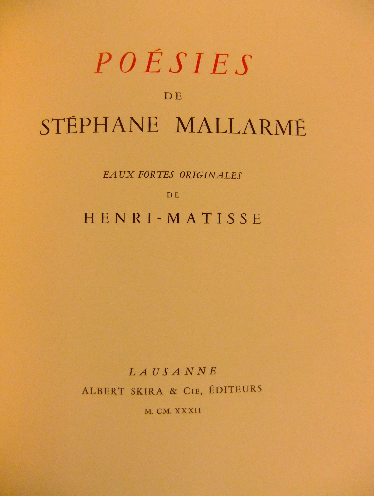

"L'Après-midi d'un faune"
Art in various mediums
By various artists
- Manet 1
- Manet 2
- Manet 3
- Manet 4
- Manet 5
- Bakst 1
- Bakst 2
- Bakst 3
- Bakst 4
- Bakst 5
- Rodin 1
- Rodin 2
- Rodin 3
- Troubridge 1
- Troubridge 2
- Troubridge 3
- Troubridge 4
- Matisse 1
- Matisse 2
- Matisse 3
- Matisse 4
- Matisse 5
- Matisse 6
- Matisse 7
- Matisse 8

 Stéphane Mallarmé and Édoard Manet: L'Après-midi d'un Faune, 1876. Original ed. copy published by A. Derenne, 1876. Bibliotèque Littéraire Jacques Doucet, Paris.
Stéphane Mallarmé and Édoard Manet: L'Après-midi d'un Faune, 1876. Original ed. copy published by A. Derenne, 1876. Bibliotèque Littéraire Jacques Doucet, Paris.
L'Après-midi d'un Faune,
1876. Original ed. copy published by A. Derenne, 1876. Bibliotèque Littéraire Jacques Doucet, Paris.
L'Après-midi d'un Faune,
1876. Original ed. copy published by A. Derenne, 1876. Bibliotèque Littéraire Jacques Doucet, Paris.
L'Après-midi d'un Faune, 1876. Original ed. copy published by A. Derenne, 1876. Bibliotèque Littéraire Jacques Doucet, Paris.
 Photograph from Afternoon of a Faun: Mallarmé, Debussy, Nijinsky. New York: Vendome Press, 1987. p. 18
Photograph from Afternoon of a Faun: Mallarmé, Debussy, Nijinsky. New York: Vendome Press, 1987. p. 18 Léon Bakst: L'Après-midi d'un Faune, (costume design: Nymph), 1912. Watercolor, pencil, gold paint and paper. Harvard Theatre Collection, Cambridge, MA.
Léon Bakst: L'Après-midi d'un Faune, (costume design: Nymph), 1912. Watercolor, pencil, gold paint and paper. Harvard Theatre Collection, Cambridge, MA.
Léon Bakst: L'Après-midi d'un Faune, (costume design: Nymph), 1912. Watercolor, pencil, gold paint and paper. Harvard Theatre Collection, Cambridge, MA.
 Photograph from Afternoon of a Faun: Mallarmé, Debussy, Nijinsky. New York: Vendome Press, 1987. p. 27
Photograph from Afternoon of a Faun: Mallarmé, Debussy, Nijinsky. New York: Vendome Press, 1987. p. 27
Photograph from Afternoon of a Faun: Mallarmé, Debussy, Nijinsky. New York: Vendome Press, 1987. p. 28

August Rodin, Nijinsky. 1912. Plaster: H. 17.5 cm; W. 9.39 cm; D. 6.5 cm. Musée Rodin, Paris.
"The second public performance of L’Après-midi d’un faune in 1912 was enthusiastically applauded by Rodin. He was particularly impressed by the dancer and choreographer Vaslav Nijinsky [...]Nijinsky supposedly agreed to pose for him, probably in July 1912, to thank the sculptor for the support he had given him during the controversy over the Ballets Russes then raging in the press due to The Faune." -From Musée Rodin's online exhibit.

August Rodin, Nijinsky. 1912. Plaster: H. 17.5 cm; W. 9.39 cm; D. 6.5 cm. Musée Rodin, Paris.
"The second public performance of L’Après-midi d’un faune in 1912 was enthusiastically applauded by Rodin. He was particularly impressed by the dancer and choreographer Vaslav Nijinsky [...]Nijinsky supposedly agreed to pose for him, probably in July 1912, to thank the sculptor for the support he had given him during the controversy over the Ballets Russes then raging in the press due to The Faune." -From Musée Rodin's online exhibit.

August Rodin, Nijinsky. 1912. Plaster: H. 17.5 cm; W. 9.39 cm; D. 6.5 cm. Musée Rodin, Paris.
"The second public performance of L’Après-midi d’un faune in 1912 was enthusiastically applauded by Rodin. He was particularly impressed by the dancer and choreographer Vaslav Nijinsky [...]Nijinsky supposedly agreed to pose for him, probably in July 1912, to thank the sculptor for the support he had given him during the controversy over the Ballets Russes then raging in the press due to The Faune." -From Musée Rodin's online exhibit.
 Vincenza Una Troubridge. L'Après-Midi d' un Faune. c. 1913. Bust of Vaslav Nijinsky as Faun. Bronze on wood: 37 cm. Harvard Theatre Collection, Cambridge, MA.
Vincenza Una Troubridge. L'Après-Midi d' un Faune. c. 1913. Bust of Vaslav Nijinsky as Faun. Bronze on wood: 37 cm. Harvard Theatre Collection, Cambridge, MA.
Vincenza Una Troubridge. L'Après-Midi d' un Faune. c. 1913. Bust of Vaslav Nijinsky as Faun. Bronze on wood: 37 cm. Harvard Theatre Collection, Cambridge, MA.

Vincenza Una Troubridge. L'Après-Midi d' un Faune. c. 1913. Bust of Vaslav Nijinsky as Faun. Bronze on wood: 37 cm. Harvard Theatre Collection, Cambridge, MA.

Vincenza Una Troubridge. L'Après-Midi d' un Faune. c. 1913. Bust of Vaslav Nijinsky as Faun. Bronze on wood: 37 cm. Harvard Theatre Collection, Cambridge, MA.

Henri Matisse. ill. in Poésies de Stéphane Mallarmé. Laussane: Skira, 1932. Etchings. Harvard's Houghton Library. Cambridge, MA. Cover.